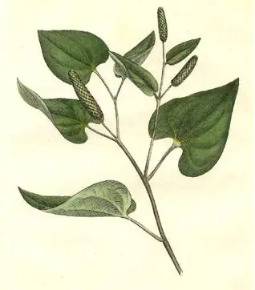

pranet · 出典付きの植物図鑑
ヒハツモドキ ☠
Piper retrofractum Vahl · Piperaceae

ヒハツモドキ は、コショウ科コショウ属に属するつる性木本 (藤本) の1種である（図1）。果実は香辛料や生薬に利用される。別名としてジャワナガコショウ、サキシマフウトウカズラなどがある (右和名欄参照)。ヒハツとよばれることもあるが、2020年現在ふつうこの名は同属別種の Piper longum (この種はインドナガコショウともよばれる) に充てられる。東南アジアに分布し、八重山諸島では香辛料用に栽培され、この香辛料は島胡椒 (島こしょう)、ヒバーチ、ピパーツ、ピパーチ、ピーヤシ、フィファチなどとよばれる。
出典: Wikipedia 日本語版「ヒハツモドキ」 · CC BY-SA 4.0
異名: Amalago antillana Raf., Amalago malamiri Raf., Chavica arnottiana Miq., Chavica chaba Miq., Chavica labillardierei Miq., Chavica maritima Miq., Chavica officinarum Miq., Chavica parvifolia Hassk., Chavica retrofracta (Vahl) Miq., Cubeba chaba (W.Hunter) Miq., Piper arnottianum (Miq.) C.DC., Piper callosum Opiz, Piper chaba W.Hunter, Piper chuvya W.Hunter ex C.DC., Piper hapnium Buch.-Ham. ex Wall., Piper maritimum (Miq.) Blume ex C.DC., Piper officinarum (Miq.) C.DC., Piper palawanum C.DC., Piper parvifolium Blanco, Piper siriboa B.Heyne
同定や利用は自己責任でお願いします。この図鑑だけを根拠に野生の植物を食べないでください。
出典
- 学名: World Flora Online Plant List 2026-06 · CC0 1.0
- 名前: Wikipedia の記事名と Wikidata · CC0 1.0（Wikidata）。記事名は事実
- 説明: Wikipedia 日本語版「ヒハツモドキ」 · CC BY-SA 4.0
- 食用・毒性: World Checklist of Useful Plant Species (Diazgranados et al. 2020, RBG Kew) · CC BY 4.0
- 分布: World Checklist of Vascular Plants (WCVP), RBG Kew, version 2026-06-04 · CC BY 3.0
このページは pranet のデータから自動生成しています。コードは MIT、データは項目ごとのライセンス（説明）。